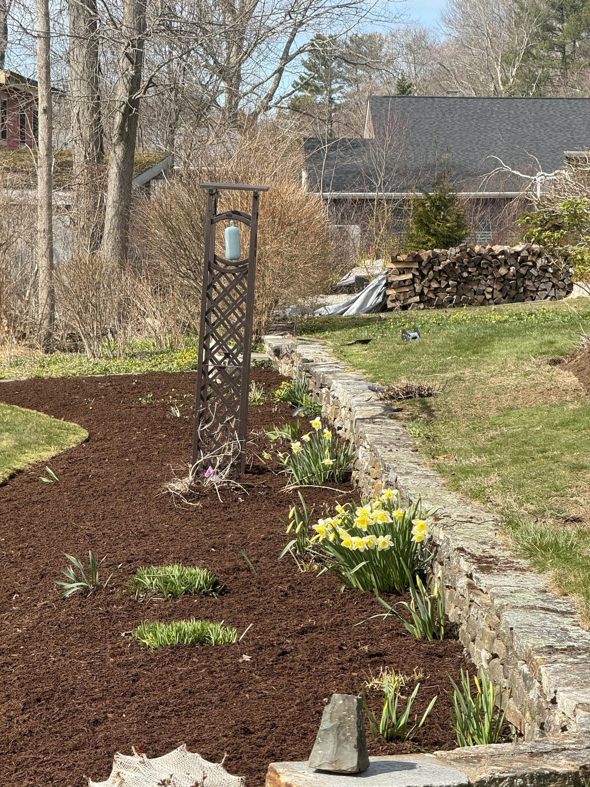
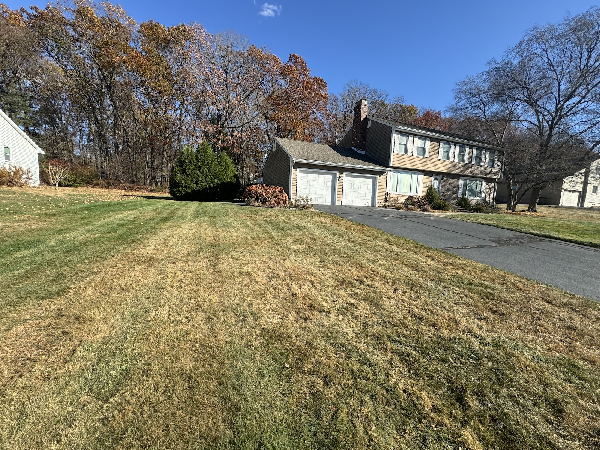
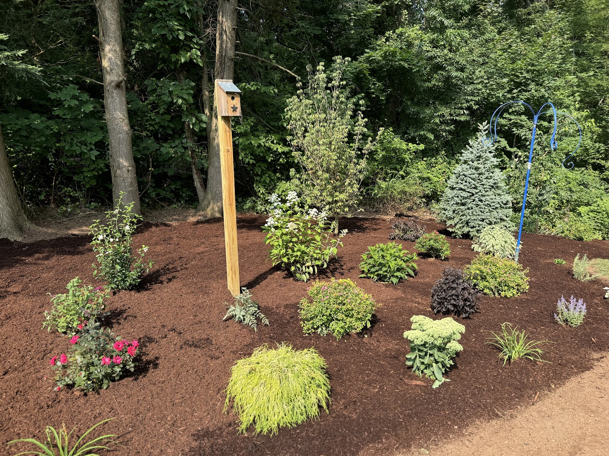
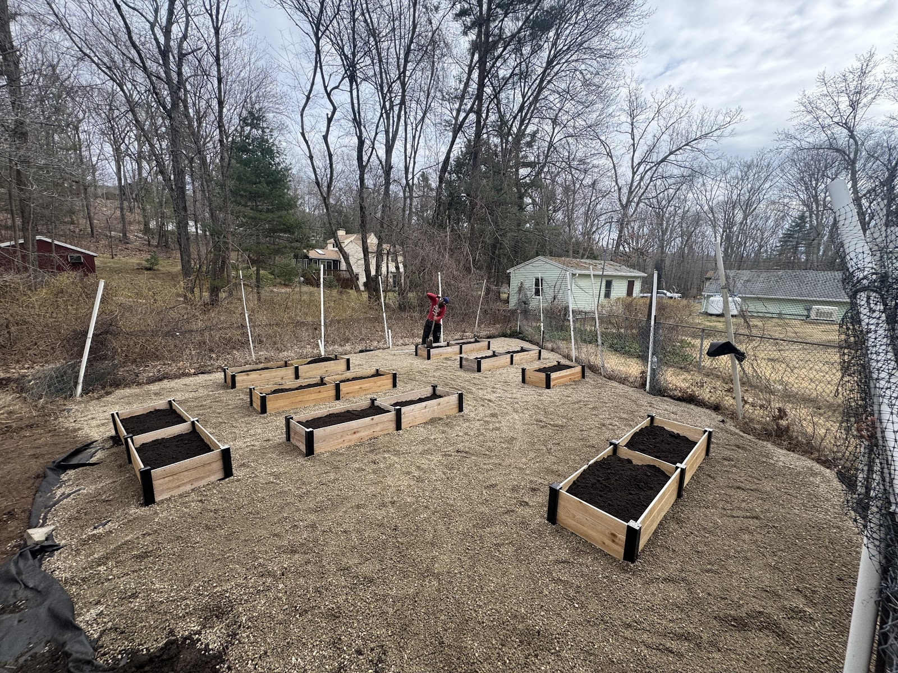
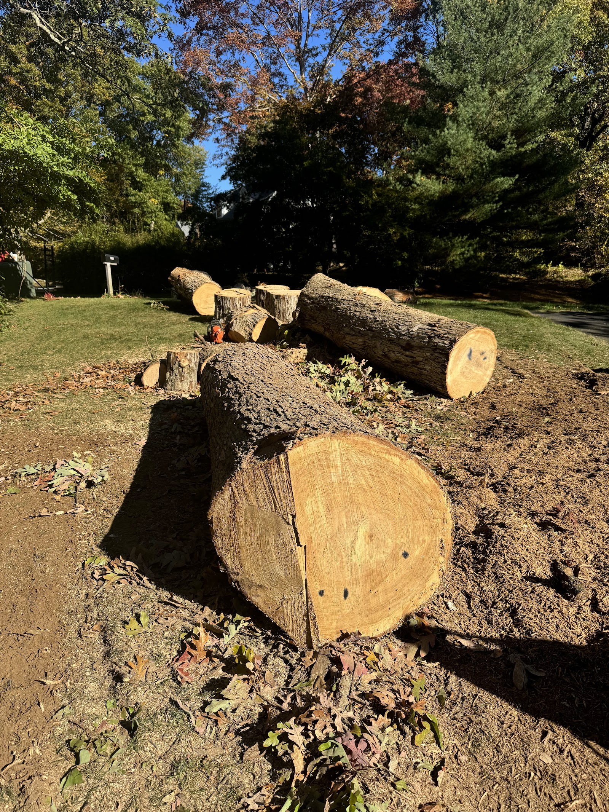
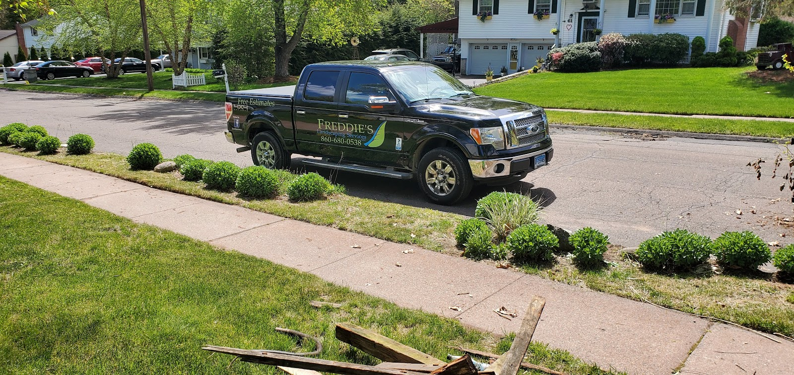

New-lawn installation
Topsoil, seeding and fertilizing — including tough new-construction lots where the soil needs help.

Why neighbors choose us
Freddie's takes on the projects that change how a yard feels — fresh lawns on tough new-construction soil, planting beds chosen to your colors, and the heavy tree and cleanup work in between. We talk you through what we're doing and how to keep it looking good after we leave.
We explain every detail — soil, seeding, and how to care for your lawn once it's in.
Trees and shrubs are professionally selected — with your choice of colors.
From new lawns to backyards turned into something you'll actually use.
What we do
The work we take on most — and the work our reviews are built on.
Topsoil, seeding and fertilizing — including tough new-construction lots where the soil needs help.
Trees, shrubs and planting beds — professionally selected and laid out to your colors.
Taking down and clearing trees so the rest of your project has room to come together.
Clearing, hauling and tidying so your property is ready for what's next.
Finished work
Real projects from around Vernon — gardens, lawns and the heavy lifting in between.




In their words
“Freddie did a fantastic job putting down topsoil, seeding, and fertilizer at my new construction home, where I had issues with the soil. He took the time to explain every detail about how to care for my lawn.”
“Fred and his crew turned my backyard into a beautiful park with trees and shrubs that were professionally selected, with my choice of colors.”
average rating
on Google
and surrounding towns

Serving Vernon & nearby
Freddie's Landscaping Services works across Vernon, CT and the surrounding area. The fastest way to start a project is a call or a quick text.
New lawn, planting beds, a tree that has to come down, or a cleanup — call or text Fred and we'll figure out the plan.